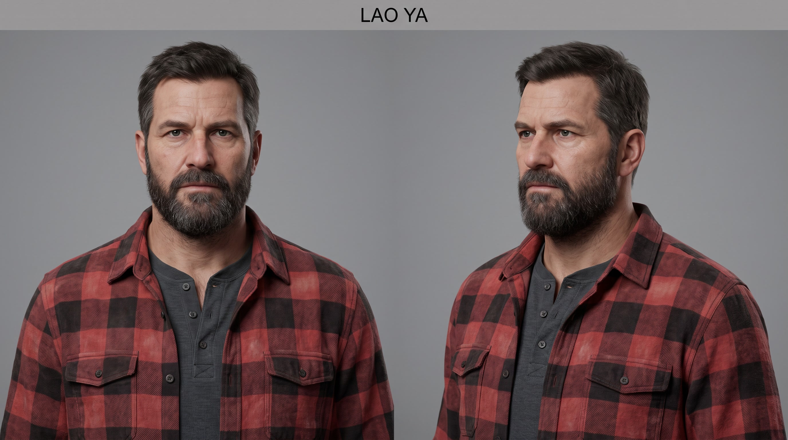

<!doctype html>
<html lang="zh-CN">
<meta charset="utf-8">
<title>AI 短片制作 · 图文教程</title>
<style>
@font-face{font-family:Serif;src:url(fonts/NotoSerifSC.ttf);font-weight:200 900}
*{box-sizing:border-box;margin:0;letter-spacing:0}
body{width:1440px;height:1920px;overflow:hidden;background:#faf9f5;color:#262d2a;font-family:Serif,serif}
.paper{position:absolute;inset:0;background:url(../out/learning-cards-v2/paper-texture.jpg) center/cover;opacity:.1}
.page{position:absolute;inset:88px 94px 85px;display:flex;flex-direction:column}
.eyebrow{display:flex;justify-content:space-between;color:#356859;font-size:27px;font-weight:700;border-bottom:2px solid #b5c3b8;padding-bottom:23px}
.number{color:#7d3833}
h1{font-size:67px;font-weight:900;line-height:1.3;margin:28px 0 20px}
.deck{font-size:34px;line-height:1.8;color:#525953;margin-bottom:24px}
.content{flex:1;min-height:0}
.still{width:100%;height:270px;object-fit:cover;display:block}
.caption{font-size:26px;color:#657368;line-height:1.6;margin:11px 0 25px}
h2{font-size:39px;font-weight:800;color:#2c6254;line-height:1.5;margin-bottom:10px}
p{font-size:34px;line-height:1.85}
b{font-weight:800;color:#262d2a}
.section{border-top:1px solid #c6cec5;padding-top:23px;margin-top:24px}
.flow{display:grid;grid-template-columns:1fr 42px 1fr 42px 1fr 42px 1fr;align-items:start;margin:27px 0}
.node{border-top:3px solid #356859;padding:17px 4px 0}
.node strong{display:block;font-size:33px;color:#2c6254}
.node span{display:block;font-size:27px;line-height:1.7;margin-top:9px}
.arrow{font-size:33px;color:#7d3833;text-align:center;padding-top:19px}
.mini-stills{display:grid;grid-template-columns:1fr 1fr;gap:22px}
.mini-stills img{width:100%;height:280px;object-fit:cover;display:block}
.mini-stills .caption{margin-bottom:17px}
.example{border-left:4px solid #a57763;padding:9px 0 9px 23px;margin-top:15px;font-size:32px;line-height:1.85;color:#5d4037}
.voice-row{display:grid;grid-template-columns:215px 1fr;gap:25px;border-top:1px solid #c6cec5;padding:20px 0;font-size:33px;line-height:1.85}
.voice-row strong{color:#7d3833}
.notice{font-size:28px;line-height:1.75;color:#626c64;margin-top:15px}
.footer{border-top:2px solid #b5c3b8;padding-top:23px;margin-top:27px;display:flex;justify-content:space-between;align-items:center;font-size:25px;color:#6a756a}
.compact p{font-size:32px;line-height:1.65}
.compact .section{padding-top:18px;margin-top:19px}
.compact h2{font-size:37px;line-height:1.4}
.compact .example{font-size:30px;line-height:1.7}
.compact .voice-row{font-size:32px;line-height:1.65;padding:18px 0}
</style>
<div class="paper"></div><main class="page" id="page"></main>
<script>
const cards = [
{
 title:'8 分钟的 AI 短片，怎么做？',
 deck:'《红色报错：救赎》设想：如果《荒野大镖客》的亚瑟成了程序员，他会怎样面对 AI？这四张卡介绍这部短片的制作方法。',
 content:`<div class="caption">片中的“正午对决”：老程序员与 AI 完成同一个开发需求。</div>
 <h2>先写分镜，再分别准备画面和声音</h2><p>分镜就是每个镜头的安排：谁出现、说什么、持续多久、什么时候切到下一张画面。本片把这些内容写在一个文件里。</p>
 <div class="flow"><div class="node"><strong>写分镜</strong><span>镜头与台词<br>出现的时间</span></div><div class="arrow">→</div><div class="node"><strong>生成画面</strong><span>人物参考图<br>图片与短视频</span></div><div class="arrow">→</div><div class="node"><strong>生成配音</strong><span>挑选声音<br>逐句录制台词</span></div><div class="arrow">→</div><div class="node"><strong>合成影片</strong><span>字幕与声音<br>按时间接起来</span></div></div>
 <div class="section"><h2>这部片用网页来“剪”画面</h2><p>程序按分镜切换图片和视频，加上字幕、人物介绍与报错界面。Chrome 浏览器每秒截取 24 张画面，再用 <b>FFmpeg 音视频工具</b>拼成视频。</p></div>
 <div class="section"><h2>声音按同一份时间表放进去</h2><p>例如台词在第 12 秒开始，声音也在第 12 秒播放。配音、音乐、键盘声分别准备，最后混成一条完整声轨，与画面合并。</p></div>
 <p class="notice">这只是本片采用的方法。使用剪辑软件，也可以照这个顺序准备素材。</p>`
},
{
 title:'怎样让主角一直是同一张脸？',
 deck:'短片的主角要出现在办公室、雨夜和屋顶。每次单独生成图片，很容易变成不同的人。',
 content:`<div class="mini-stills"><div><div class="caption">先做人物参考图：正面与侧面。</div></div><div><div class="caption">再带着参考图生成影片镜头。</div></div></div>
 <div class="section"><h2>1. 先定外貌、服装和道具</h2><p>固定主角的胡须、发型和格子衬衫，需要外套时做一个外套版。重要道具也保留参考图。</p></div>
 <div class="section"><h2>2. 每次生成，都上传对应参考图</h2><p>用支持参考图输入的模型，上传图片并说明位置、衣着和场景。只写图片文件名，模型看不到那张图。</p><div class="example">提示词示例：同一个男人，穿参考图中的格子衬衫，坐在办公室窗边，看向电脑。保持脸型、胡须和发型。</div></div>
 <div class="section"><h2>3. 确认图片，再生成短动作</h2><p>本片用 MiniMax H3 把图片变成视频。先挑一张人物正确的图作为开头，再要求一个动作，例如“低下目光，再看向对方”。</p></div>
 <div class="section"><h2>4. 要看动作有没有完成</h2><p>交接笔记本的镜头，要检查手和物品有没有变形、东西有没有交到对方手里。切回同一镜头时，从动作结束处接着播，避免再交一次。</p></div>`
},
{
 title:'配音怎么选，才能像这个人？',
 deck:'本片主角是写了十五年代码的老程序员，对手是投资方派来的审计者。两个人需要不同的年龄感和说话方式。',
 content:`<div class="caption">老程序员把自己的笔记交给年轻同事，是片中一段告别。</div>
 <div class="voice-row"><strong>老程序员</strong><span>要有低沉、略粗粝的声音，但不能像虚弱的老人。第一轮声音偏年轻，后续比较了几个方案。</span></div>
 <div class="voice-row"><strong>审计者</strong><span>要浑厚、从容，语气带一点轻蔑。单纯提高音量，或让他大喊，都不符合这个角色。</span></div>
 <div class="voice-row"><strong>结尾的女儿</strong><span>画面是小女孩，配音也应选女童音色。人物的声音要和画面中的年龄、身份对应。</span></div>
 <div class="section"><h2>先用同一句台词试听</h2><p>挑一句有停顿、有情绪的对白，用不同音色生成，调到相近音量再比较。听年龄、语气和吐字，选好后保存音色编号，继续生成其他台词。</p></div>
 <div class="section"><h2>把声音放回画面里听</h2><p>单独听着好，不一定适合镜头。要检查台词是否说完、音乐是否盖住人声，下一句有没有抢进来。太长时先改语速或重录。</p></div>
 <p class="notice">本片角色配音主要使用 MiniMax TTS。黑屏中的背景介绍保留静默；不是每段文字都需要念出来。</p>`
},
{
 title:'第一次尝试，先完成 30 秒',
 deck:'不必一开始就生成整部电影。先选一个人物、一段动作和两句对白，看看这些素材能不能顺利接起来。',
 content:`<h2>一个可以照着做的小练习</h2><div class="flow"><div class="node"><strong>人物图</strong><span>同一个角色<br>两张不同机位</span></div><div class="arrow">→</div><div class="node"><strong>短视频</strong><span>选一张图<br>生成一个动作</span></div><div class="arrow">→</div><div class="node"><strong>两句配音</strong><span>选一个声音<br>分别生成台词</span></div><div class="arrow">→</div><div class="node"><strong>剪成 30 秒</strong><span>加字幕与声音<br>完整看一遍</span></div></div>
 <div class="section"><h2>检查什么？</h2><p>两张图还是不是同一个人？动作有没有变形？台词和字幕能不能对上？音乐是否太响？这些问题解决后，再增加角色和镜头。</p></div>
 <div class="section"><h2>视频预算放在哪些镜头？</h2><p>这部片先用图片搭出完整故事，再给故障现场、交接笔记本和人物表情补视频。最终生成了 <b>19 个视频素材，共 150 秒</b>，经过剪辑和复用进入八分多钟的成片。</p></div>
 <div class="section"><h2>本片花了多少钱？</h2><p>已记录的 MiniMax 视频、配音和声音设计，按当时标价估算约 <b>139 元</b>。早期图片生成、人工和设备未计入，这不是整部片的全部成本。</p></div>
 <div class="section"><h2>生成卡住，别立刻重新付费</h2><p>保存服务返回的任务编号，先查询原任务。请求超时可能只是没有收到结果，重新提交可能重复收费。原文件、提示词和生成记录也一起保存。</p></div>
 <div class="section"><h2>最后导出完整视频，再检查</h2><p>修改一句话时，记得同时修改字幕和配音。看过修改段落后，再播放导出的文件，检查声音、转场和结尾是否正常。</p></div>`
}
];
const index = Number(new URLSearchParams(location.search).get('page') || 1)-1;
const data=cards[index];
if(index>0) document.querySelector('#page').classList.add('compact');
document.querySelector('#page').innerHTML=`<div class="eyebrow"><span>AI 短片制作 / 从零了解这个项目</span><span class="number">${String(index+1).padStart(2,'0')} / 04</span></div><h1>${data.title}</h1><div class="deck">${data.deck}</div><div class="content">${data.content}</div><div class="footer"><span>案例：《红色报错：救赎》</span><span>${['制作流程','角色与动作','声音与对白','第一次实践'][index]}</span></div>`;
</script>
</html>
